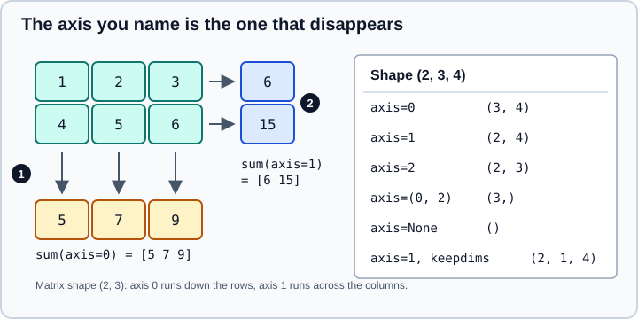

Reductions and Axis Semantics
|
This content was generated with the assistance of AI and should be verified against the official documentation before being relied on in production. |
This page targets NumPy 2.5 (2.5.4 was current), and was checked in October 2026. Examples target Python 3.13 or 3.14 and were run on Python 3.13. All outputs were produced with NumPy 2.5.4.
A reduction collapses one or more axes of an array into a single value per remaining position: a sum, a maximum, an "any true", a standard deviation. Almost every statistics and data-preparation routine in NumPy is a reduction, so getting axis right is one of the highest-return skills in the library. The functions behind most reductions are ufunc methods (np.add.reduce underlies np.sum), described on Universal Functions; the statistical functions built on them (median, quantile, histogram) are on Statistics and Histograms.
The rule: the named axis disappears
axis=k means run along dimension k, so dimension k is removed from the result shape. axis=None (the default for np.sum, np.mean, np.max and the other named reductions) reduces over all elements and returns a scalar. A negative axis counts from the end, and a tuple names several axes at once.

In the figure, marker 1 is the column totals produced by axis=0 (the rows are collapsed, so the arrows run down), and marker 2 is the row totals produced by axis=1 (the columns are collapsed, so the arrows run across). The same rule extends to any number of dimensions.
import numpy as np
x = np.arange(24).reshape(2, 3, 4)
print(x.sum()) # 276
print(x.sum(axis=0).shape) # (3, 4)
print(x.sum(axis=1).shape) # (2, 4)
print(x.sum(axis=2).shape) # (2, 3)
print(x.sum(axis=-1).shape) # (2, 3)
print(x.sum(axis=(0, 2))) # [ 60 92 124]
print(x.sum(axis=1, keepdims=True).shape) # (2, 1, 4)
m = np.array([[1, 2, 3], [4, 5, 6]])
print(m.sum(axis=0)) # [5 7 9]
print(m.sum(axis=1)) # [ 6 15]
print(m.mean(axis=0)) # [2.5 3.5 4.5]
print(m.cumsum(axis=1)) # [[ 1 3 6] [ 4 9 15]]
print(np.diff(m, axis=1)) # [[1 1] [1 1]]Source: numpy.sum
An out-of-range axis raises AxisError: axis 3 is out of bounds for array of dimension 3. An empty tuple axis=() reduces nothing and returns an array of the same shape. A common confusion comes from thinking of axis=0 as "the rows": it is the axis whose index changes while the others are fixed, and the result holds one value per position of the other axes. When in doubt, check that result.shape equals the input shape with the named axis deleted.
keepdims makes the result broadcast back
keepdims=True keeps each reduced axis with length 1, so the result broadcasts against the original array. This is the clean way to normalise rows or centre columns without writing [:, None].
import numpy as np
x = np.arange(24).reshape(2, 3, 4)
centred = x - x.mean(axis=2, keepdims=True)
print(centred[0, 0]) # [-1.5 -0.5 0.5 1.5]
scores = np.array([[1.0, 2.0, 3.0], [4.0, 5.0, 6.0]])
row_share = scores / scores.sum(axis=1, keepdims=True)
print(row_share.sum(axis=1)) # [1. 1.]Source: NumPy user guide: Broadcasting
Without keepdims, scores / scores.sum(axis=1) would try to divide a (2, 3) array by a (2,) array and fail on shape alignment (3 against 2). The broadcasting rules are on Broadcasting.
Common reductions
| Function (method) | Notes |
|---|---|
|
Accumulate in a wider dtype for small integers and booleans (next section). |
|
|
|
|
|
Return the first index of the extremum. With |
|
|
|
Population by default ( |
|
Counts non-zero (or |
|
Accumulations. They keep the shape. |
|
Ignore NaN; see below. |
The ptp method note is easy to miss: a.ptp() raises in NumPy 2, so write np.ptp(a).
Accumulator dtype and overflow
sum and prod do not accumulate in the input dtype when it is a small integer or boolean: NumPy uses the platform integer (int64 on 64-bit Linux, macOS and, since NumPy 2.0, Windows) for signed integers and the unsigned platform integer for unsigned ones. Floating-point types keep their precision. mean of integers returns float64. You can override all of this with dtype=.
import numpy as np
a = np.array([200, 100], dtype=np.uint8)
print(a.sum(), a.sum().dtype) # 300 uint64
print(a.sum(dtype=np.uint8)) # 44 wrapped modulo 256
print(np.prod(np.array([1, 2, 3], dtype=np.int8)).dtype) # int64
print(np.array([True, True, True]).sum()) # 3
print(np.array([1, 2], dtype=np.float32).sum().dtype) # float32
print(np.mean(np.array([1, 2], dtype=np.int8)).dtype) # float64
print(np.mean(np.array([200, 200], dtype=np.uint8))) # 200.0, no overflowSource: numpy.sum and numpy.mean
The wrap-around in a.sum(dtype=np.uint8) is silent: integer array arithmetic does not warn on overflow. The cure is to pick a wide enough accumulator, not to hope the data is small. The int64 accumulator itself overflows silently when the true sum exceeds 9.2e18. The dtype rules for operators are on Type Promotion and Data Types.
float32 sums: pairwise summation helps, cumsum does not
For floating-point data, np.sum uses pairwise summation along a contiguous axis, which keeps rounding error small even in low precision. np.cumsum, which must produce every partial sum, accumulates sequentially and loses more.
import numpy as np
f = np.full(10**7, 0.1, dtype=np.float32)
print(f.sum()) # 1.0000001e+06 close to the exact 1000000.015
print(f.sum(dtype=np.float64)) # 1000000.0149011612
print(np.cumsum(f)[-1]) # 1.087937e+06 visibly wrongPairwise summation applies along the fast (contiguous) axis; reducing along a non-contiguous axis can be less accurate than the same reduction along the contiguous one. When accuracy matters, pass dtype=np.float64 to the reduction (as above) or use math.fsum for exactly rounded sums of a small list. Mean and variance in float16 and float32 are particularly prone to this; request a float64 accumulator with dtype=. See Floating-Point Errors and errstate for more on rounding.
initial, where and out
initial= sets the starting value of the reduction and is the way to reduce an empty selection with an operation that has no identity. where= restricts the reduction to the elements for which a boolean mask (broadcastable to the input) is true. out= writes into an existing array of the correct shape and dtype.
import numpy as np
m = np.array([[1, 2, 3], [4, 5, 6]])
print(np.sum(m, axis=1, where=m > 1)) # [ 5 15] 2 + 3 and 4 + 5 + 6
print(np.mean(m, where=m > 1)) # 4.0
print(np.max(np.array([], dtype=float), initial=-np.inf)) # -inf
print(np.max(m, axis=1, initial=10)) # [10 10] initial participates in the maximum
o = np.empty(3, dtype=np.int64)
np.add.reduce(m, axis=0, out=o)
print(o) # [5 7 9]Source: numpy.max
For max and min with where=, initial= is required, because a fully masked slice would otherwise have no value. For mean, the count is the number of selected elements, not the total size.
Empty inputs
The result of reducing an empty array depends on whether the operation has an identity.
import numpy as np
import warnings
e = np.array([])
print(e.sum(), e.prod()) # 0.0 1.0
with warnings.catch_warnings(record=True) as w:
warnings.simplefilter("always")
print(e.mean()) # nan
print([str(i.message) for i in w])
# ['Mean of empty slice', 'invalid value encountered in scalar divide']
try:
e.max()
except ValueError as err:
print(err) # zero-size array to reduction operation maximum which has no identitySource: numpy.mean
sum and prod return their identities (0 and 1), mean returns NaN with warnings, and max/min raise unless initial= is given. Code that groups data and may meet an empty group needs to handle all three cases explicitly.
NaN handling
NaN is "not a number" and contaminates ordinary reductions: np.sum, np.mean, np.max and np.min all return NaN if any element is NaN. The nan* family ignores NaN.
import numpy as np
import warnings
n = np.array([1.0, np.nan, 3.0])
print(n.sum(), n.max()) # nan nan
print(np.nansum(n), np.nanmax(n), np.nanmean(n)) # 4.0 3.0 2.0
print(np.fmax(n, 0), np.maximum(n, 0)) # [1. 0. 3.] [ 1. nan 3.]
print(n.argmax(), np.nanargmax(n)) # 1 2
with warnings.catch_warnings(record=True) as w:
warnings.simplefilter("always")
print(np.nanmax(np.array([np.nan, np.nan]))) # nan
print(w[0].message) # All-NaN slice encounteredSource: NumPy reference: Statistics and numpy.nanmax
Three details matter. np.argmax treats NaN as the largest value, so it returns the index of the first NaN; use np.nanargmax to skip it. np.nanmax of an all-NaN slice returns NaN and warns, because there is nothing to return. And np.nansum of all NaN returns 0.0 with no warning, which can hide missing data: check np.isnan(x).all(axis=...) when "no data" is different from "zero". The pandas equivalents skip NaN by default (skipna=True), a behaviour difference covered in the pandas part of this section.
argmax, argmin and take_along_axis
argmax(axis=k) returns indices along axis k. With keepdims=True, the index array has the same number of dimensions as the input, which is what np.take_along_axis needs to pull the matching values out.
import numpy as np
s = np.array([[3, 1, 2], [9, 8, 7]])
idx = s.argmax(axis=1, keepdims=True)
print(idx.ravel()) # [0 0]
print(np.take_along_axis(s, idx, axis=1).ravel()) # [3 9]
print(np.unravel_index(s.argmax(), s.shape)) # (np.int64(1), np.int64(0))
print(np.argmax(np.array([1, 3, 3]))) # 1 first occurrence winsSource: numpy.take_along_axis
With axis=None, the result is an index into the flattened array, and np.unravel_index converts it back to coordinates. Values within a row are never sorted by argmax, so for "top k" use np.argpartition or np.sort; see Sorting, Searching and Counting.
var, std, and the ddof argument
np.var and np.std divide by N - ddof, with ddof=0 as the default (the population formula). The sample estimator needs ddof=1. NumPy 2.0 added a mean= argument so that a precomputed mean is not recomputed. pandas uses ddof=1 by default for Series.std, which is a classic source of disagreement between the two libraries.
import numpy as np
d = np.array([1.0, 2.0, 3.0, 4.0])
print(d.var(), d.var(ddof=1)) # 1.25 1.6666666666666667
print(d.std(ddof=1)) # 1.2909944487358056
print(np.std(d, mean=2.5)) # 1.118033988749895
print(np.std(np.float32([1, 2, 3, 4])).dtype) # float32
print(np.std(np.float32([1, 2, 3, 4]), dtype=np.float64).dtype) # float64
print(np.average([1, 2, 3], weights=[3, 1, 1])) # 1.6Source: numpy.std and numpy.average
For the statistical meaning of the choice, see Statistics Fundamentals.
any, all and counting booleans
A boolean comparison produces a boolean array, and sum, mean, any, all and count_nonzero turn it into counts and proportions.
import numpy as np
m = np.array([[1, 2, 3], [4, 5, 6]])
print(np.count_nonzero(m > 2, axis=0)) # [1 1 2]
print((m > 2).mean()) # 0.6666666666666666 fraction of True
print(np.array([[0, 1], [0, 0]]).any(axis=1)) # [ True False]
print(np.all([]), np.any([])) # True FalseSource: numpy.count_nonzero
Do not call bool(arr) on an array to test it: for an array with more than one element it raises ValueError, and bool(np.array([])) also raises in NumPy 2.5 (its truth value is ambiguous); use arr.size > 0, arr.any() or arr.all() as appropriate.
Passing a generator
np.sum(generator) used to fall back to the Python built-in with a deprecation warning. In NumPy 2.5 it raises a TypeError, with the advice to use np.sum(np.fromiter(generator, dtype=float)) or the built-in sum.
import numpy as np
total = np.sum(np.fromiter((i * i for i in range(5)), dtype=np.int64))
print(total) # 30Source: numpy.fromiter
The same applies to other reductions: convert to an array first.
Where reductions are not ufunc methods
np.median, np.percentile, np.quantile, np.ptp, np.average and np.cov are implemented in Python on top of reductions and sorting. They accept axis with the same meaning but not where= (except where the documentation says so), and they are not ufuncs, so np.median.reduce does not exist. Likewise masked arrays have their own versions of these functions that skip masked entries; see Masked Arrays.
Pitfalls summary
-
The named axis is removed from the shape; use
keepdims=Trueto broadcast the result back. -
Small integers accumulate in the platform integer; pass
dtype=to control overflow and precision. -
A float32 mean over millions of values deserves
dtype=np.float64. -
np.cumsumis less accurate thannp.sumfor floats. -
NaN propagates through
sum,mean,maxandmin, andargmaxreturns the NaN’s index; use thenan*functions deliberately. -
An empty
maxraises; supplyinitial=. -
varandstddefault to the population formula (ddof=0). -
np.sum(generator)is an error. -
where=onmaxandminneedsinitial=.